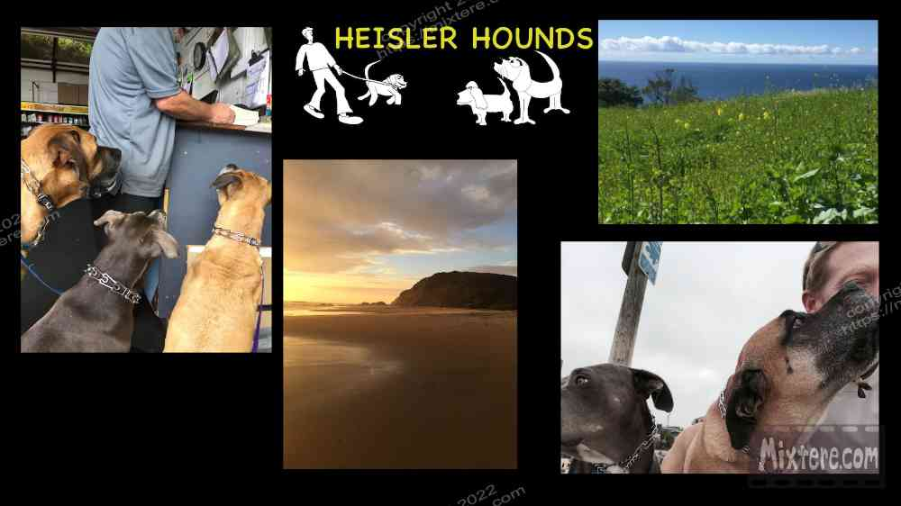
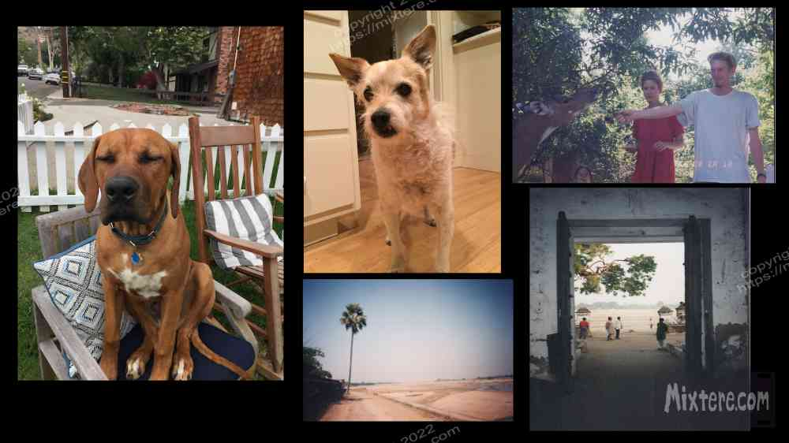

After the completion of my time in Bodh Gaya, as year gave way to year, I found myself aging quite significantly without having explored the world the way that I had wanted to. And I still hadn’t returned to Bodh Gaya. My endless drive to discover and roam, as well as other factors related to how I was socialized, my personality and temperament led to my employment history being catastrophic. Good-paying jobs eluded me more with each year. When I interviewed for positions, no one had heard of The Colorado College or understood the effort involved in that education. I tried to salvage my education by getting a teaching credential but unsurprisingly I was one of the 50% that leave the profession within the first five years. I've had more low-paying jobs that I can even remember. I even tried a number of small business ideas without much success. But unbeknownst to me forces were in motion that would eventually find me in India, the land of my fixation.
As I entered into middle age I found myself running a small home services business in my “hometown” of Laguna. Its main focus was dog services- walking, sitting, grooming and leash-training. Despite the fact that they were really someone else’s property the dogs became great friends. They are such wonderful sincere creatures and the best friends I have had to this day. We learned to communicate and to trust each other. The dogs transformed my lone wolf persona and people were drawn to us. We had some really good times and it was a great thing for a while. And then it wasn’t anymore. Laguna… for me, is a gilded cage. It has become too popular, ostentatious and expensive for me through the years. It is also surrounded by ferocious, almost perpetual traffic jams. Because of this most locals try to not to leave town. Due to these and other factors Laguna takes on the feeling of an island that is removed from the surrounding world. This island quality revealed itself when I left Laguna and was immediately confronted with an endless span of freeways and sprawl that contrasts so much it seems a border or even an ocean has been crossed and a much more grim land entered.
Even though the doldrums had set in on the island, I stayed and held onto my modest dog gig, not knowing what else to do. My charges and I dodged Range Rovers and speeding SUV packed with gagling tourists. Me and my four-legged friends fought with the hordes for space on the narrow lanes and sidewalks of laguna. I became an expert dog handler and learned to anticipate the movement of those around me. But due to the traffic and the sheer scale of the hordes descending upon the town each day, I struggled to achieve safety for the dogs and me.
Eventually I could no longer ignore what I had been struggling with for decades. This was, although it had been a wonderful place at one point in time and it will always be my birthplace so dear to my heart, Laguna was spoiled, ruined. The pressure from so many people and so much money had forced the culture of the place to transform, absconding with its former bohemian self. It was the work and housing issue that really spurred change for me. Up to that point I had sort of managed in shared living situations and converted garages and work-sheds. But one day I got carbon monoxide poisoning from my last studio apartment. After my trip to the hospital I contacted the gas company to inspect the site. They red-tagged the oven for carbon monoxide leakage but my landlord took the tag off and told me that it was safe. This was a very clear sign that I needed to leave.
My attachment to Laguna was strong and still is. I had to reach deep inside to find the courage to leave. When I found that courage I noticed, again, the nagging pull to go back to Bodh Gaya. The winds of change were blowing, promising the possibility of freedom for me. Again and again I found myself reflecting on my time there so many years ago. The images and sounds of the community in the Burmese Vihar and the dusty streets danced in my head. I finally resolved to take the chance. It soon dawned on me that I was not prepared. Twenty three years had passed since I had participated in the Buddhist Studies program. In that time I had returned to India only once, to visit an ashram in the south that my mother was familiar with. There was much work to do. I reached out to the old director of the program, Robert Pryor. He responded supportively. I contacted the program’s student alumni group to ask for help. Two former participants wrote back. With the help of these folks I began the process of preparation, the application for the visa, arrangements for inoculations and malaria medication. Things were getting real.
This was to be a journey with no end in sight. With no home to return to I commenced to purging. My discovery of how difficult this was smote a powerful blow to my ego. It had identified itself as a minimalist. But with my investments in the journey and notice given to my dog clients, there was nothing to it but to press on. Gradually the pile got smaller with the last thing to go being the car. Magically, three days before my flight departed I sold it for the full asking price. Then I repeated the process of packing my luggage, finding the capacity insufficient, eliminating things and packing again. Finally, I had the Dana Designs pack from my original voyage, bursting at the seams, along with a a student-sized pack.
On the morning of my departure I was about as ready as I was going to be. My father had arranged a car to take me to LAX. A sedan pulled up, I hopped in and the driver proceeded to talk my ear off for the whole way to the airport. The poor man was clearly in need of company and an ear. It turned out that despite the fancy car and graduate degrees. he and his wife were living hand-to-mouth as I had been. In addition to feeling compassion for them I was heartened by my choice of embarking on my quest. It really was necessary to let go and free myself to see if something better was out there for me. The driver dropped me off at the Cathay Pacific terminal and we said our goodbyes. When I entered the airport I realized that things had just gotten very real. I was swimming in that surreal moment just before a voyage, experiencing the last vestiges of my formal reality. This consisted of the humdrum, practical steps of check-in, strolling for the gate and a bunch of waiting… to board what can essentially be a time machine to whisk you to another world.
Finally aboard the plane the enormity of what I had done hit me. The plane taxied and waited and taxied some more. The anticipation within me was thick. Then... the engines roared to life. We began picking up speed. Out the window I could see the land that I knew moving faster and faster. Then my heart surged as the nose of the plane rose and we lifted off.

Right-click below to open in new tab

Click below for next chapter